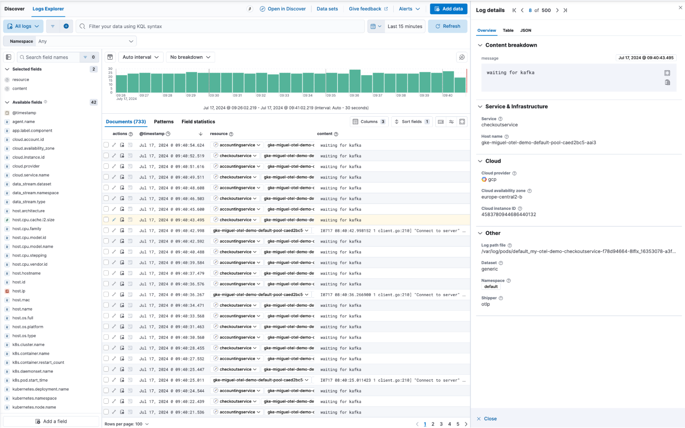
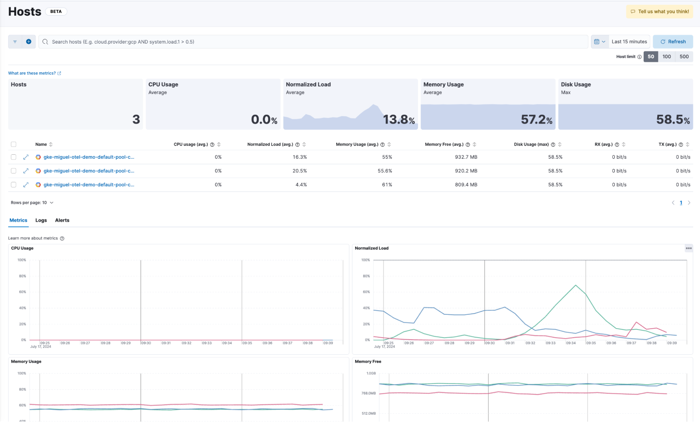

What’s new in 8.15
editWhat’s new in 8.15
editHere are the highlights of what’s new and improved in 8.15.
Other versions: 8.14 | 8.13 | 8.12 | 8.11 | 8.10 | 8.9 | 8.8 | 8.7 | 8.6 | 8.5 | 8.4 | 8.3 | 8.2 | 8.1 | 8.0 | 7.17
Introducing Elastic Observability 8.15: Elastic Distribution for OpenTelemetry Collector, native OTLP profiling, AI Assistant support for Google Vertex (Gemini Pro model 1.5), LLM observability for Azure OpenAI, and logs data set quality improvements.
Introducing the Elastic Distro for OpenTelemetry Collector
editThe Elastic Distribution for OpenTelemetry Collector is now in public technical preview offering a seamless solution for collecting logs and analyzing host health.
With the Elastic Distro for OpenTelemetry Collector, users can ship logs and host metrics to their Elastic Stack in three simple clicks.
The Elastic Distro for OpenTelemetry enables users to:
-
Collect and ship logs: Use the OpenTelemetry Collector to gather log data from various sources and ship it directly to Elastic where it can be analyzed in Kibana Discover.
 -
Assess host health: Leverage the OpenTelemetry host metrics receiver to monitor and evaluate the performance of their hosts. This data can then be visualized and analyzed in Elastic’s Observability Hosts UI, providing deep insights into host performance and health.

Elastic Cloud now accepts Universal Profiling data in OTLP format
editWe are adding support for Universal Profiling in OTLP format in Elastic Cloud (ESS). This functionality, now in technical preview, will enable users of our recently donated Universal Profiling agent to use OTLP with Elastic Cloud.
The Universal Profiling agent enables continuous profiling of applications, capturing detailed performance data that can now be sent to Elastic for in-depth analysis.
Elastic AI Assistant adds Google Gemini support and knowledge base index configuration
editThe Elastic AI Assistant can now take advantage of the Google Vertex AI and use the Gemini family of models. We recommend starting with Gemini 1.5 Pro for Elastic AI Assistant because of Gemini’s large context windows. It can be especially helpful for users who are running Elastic in GCP.
Also new in 8.15, the Elastic AI Assistant allows users to configure any index containing documents that have been vectorized with the Elastic Learned Sparse EncodeR (ELSER) ML model to be searched as part of the Elastic AI Assistant knowledge base. This provides flexibility for how knowledge base data is onboarded to inform whichever LLM that is being used.
LLM observability: Azure OpenAI
editWe are excited to announce the general availability of the Azure OpenAI integration that provides comprehensive Observability into the performance and usage of the Azure OpenAI Service!
While we have offered visibility into LLM environments for a while now, the addition of our Azure OpenAI integration enables richer out-of-the-box visibility into the performance and usage of Azure OpenAI based applications, further enhancing LLM observability.
For more information and to get started, please refer to the blog available in Elastic Observability Labs and the user guide!
Logs data set quality improvements
editThe beta release of our new data set quality feature in Elastic Observability allows users to identify and isolate any issues related to logs data quality, which could occur during ingestion, parsing, and field mapping. By providing an overview of all data sets with estimated size, ingested documents, and quality information based on degraded documents, users can view quality trends over time; identify responsible integrations, fields, and data types; and drill down into specific issues. The document viewer also highlights any problems with log ingestion and parsing, ensuring data completeness for each individual log message. Upgrade your cluster to the latest version to try this new experience yourself!
SLO history and status reporting
editWe have added a couple of updates to make navigating Service Level Objectives (SLOs) easier. We are introducing a History tab in the SLO Overview page, so users can now look back at any period of time and zoom in on what the status of the SLO was at that time, as well as zoom into the charts to refine the time period.
In addition to looking at the history of SLOs, we have implemented additional status options to manage the SLOs better. Added status conditions include “Stale” and “No Data,” which can be used to find SLOs that have stopped reporting data or that never started enabling users to edit them or clean them up.